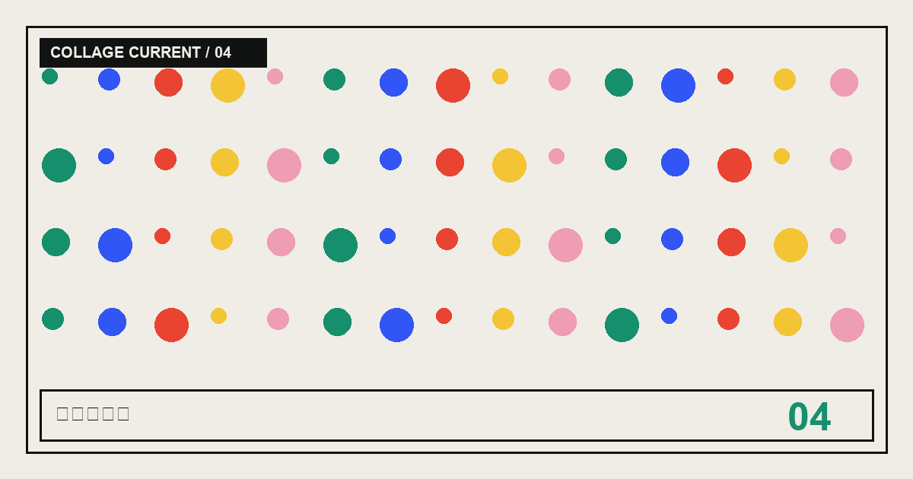

跳到主要内容CURRENT / 041~ISSUE_THEME~~ISSUE_LABEL~
CLIPPING / 04 · 往返对话页
~UNDERPASS_TITLE~
~UNDERPASS_DECK~
- 作者
- ~AUTHOR_NAME~
- 阅读时间
- ~UNDERPASS_READING_TIME~
- 核验日期
- ~VERIFIED_DATE~
04
~UNDERPASS_COVER_CAPTION~A~UNDERPASS_VOICE_A~
B~UNDERPASS_VOICE_B~
~UNDERPASS_OPENING_TITLE~
01 / ~UNDERPASS_SECTION_1_KICKER~~UNDERPASS_SECTION_1_TITLE~
~UNDERPASS_SECTION_1_BODY_1~
~UNDERPASS_SECTION_1_BODY_2~
02 / ~UNDERPASS_SECTION_2_KICKER~~UNDERPASS_SECTION_2_TITLE~
~UNDERPASS_SECTION_2_BODY_1~
~UNDERPASS_SECTION_2_QUOTE~
~UNDERPASS_SECTION_2_BODY_2~
03 / ~UNDERPASS_SECTION_3_KICKER~~UNDERPASS_SECTION_3_TITLE~
~UNDERPASS_SECTION_3_BODY_1~
~UNDERPASS_SECTION_3_BODY_2~
04 / ~UNDERPASS_SECTION_4_KICKER~~UNDERPASS_SECTION_4_TITLE~
~UNDERPASS_SECTION_4_BODY_1~
~UNDERPASS_SECTION_4_BODY_2~
05 / ~UNDERPASS_SECTION_5_KICKER~~UNDERPASS_SECTION_5_TITLE~
~UNDERPASS_SECTION_5_BODY_1~
~UNDERPASS_SECTION_5_QUOTE~
~UNDERPASS_SECTION_5_BODY_2~
06 / ~UNDERPASS_SECTION_6_KICKER~~UNDERPASS_SECTION_6_TITLE~
~UNDERPASS_SECTION_6_BODY_1~
~UNDERPASS_SECTION_6_BODY_2~
~UNDERPASS_FAQ_TITLE~
~FAQ_UNDERPASS_SEATING_1_QUESTION~
~FAQ_UNDERPASS_SEATING_1_ANSWER~
~FAQ_UNDERPASS_SEATING_2_QUESTION~
~FAQ_UNDERPASS_SEATING_2_ANSWER~
~FAQ_UNDERPASS_SEATING_3_QUESTION~
~FAQ_UNDERPASS_SEATING_3_ANSWER~